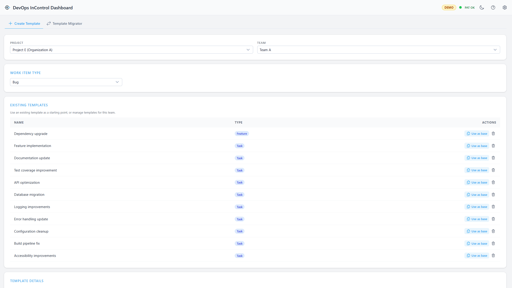

Template Manager
The Template Manager lets you create, delete, copy, and migrate Azure DevOps work item templates across projects and teams. Templates define default field values for new work items and are scoped to a specific team and work item type.

The Template Manager overview.
Create Template Tab
Use the Create Template tab to build new templates or manage existing ones.
How to Create a Template
- Select Project & Team — Choose the project and team that will own the template.
- Work Item Type — Pick the type of work item the template applies to (e.g. Bug, User Story, Task).
- Review Existing Templates — See templates already defined for this team/type. You can Use as base to clone an existing template's fields into the editor, or Delete a template you no longer need.
- Template Details — Enter a name, optional description, and add default field values.
Field Editor
The field editor lets you define which fields receive default values when the template is applied:
- Click Add Field to add a new row.
- Select the field name from the dropdown (only fields not already in use are shown).
- Enter the default value.
- Click the remove button to delete a field row.
Using an Existing Template as a Starting Point
Click Use as base next to any existing template. This pre-fills the editor with that template's name (with " (copy)" appended), description, and all field values. Modify as needed and save as a new template.
Template Migrator Tab
Use the Template Migrator tab to copy templates from one project/team to one or more target projects.
How to Migrate Templates
- Source Project — Select the project to copy templates from.
- Source Team — Select the team that owns the source templates.
- Select Templates — Check the templates you want to copy. Use Select all to include everything.
- Target Projects — Select one or more target projects and choose a team for each.
- Preview & Apply — Review the migration table showing what will be created, what already exists, and apply.
Overwrite Existing
Enable the Overwrite existing checkbox to update templates that already exist in the target (matched by name). When disabled, existing templates are skipped.
Missing Fields Warning
If a source template uses custom fields that do not exist in a target project, a warning is displayed. The migration will still proceed, but those fields may not be applied correctly.
Results
After migration completes, results are grouped into:
- Created — New templates that were successfully created.
- Overwritten — Existing templates that were updated.
- Skipped — Templates that already existed (when overwrite is off).
- Failed — Templates that could not be created (with error details).